Only 1.3% of YouTube channels ever reach 100K.
Here's how you get to the top 0.3%.
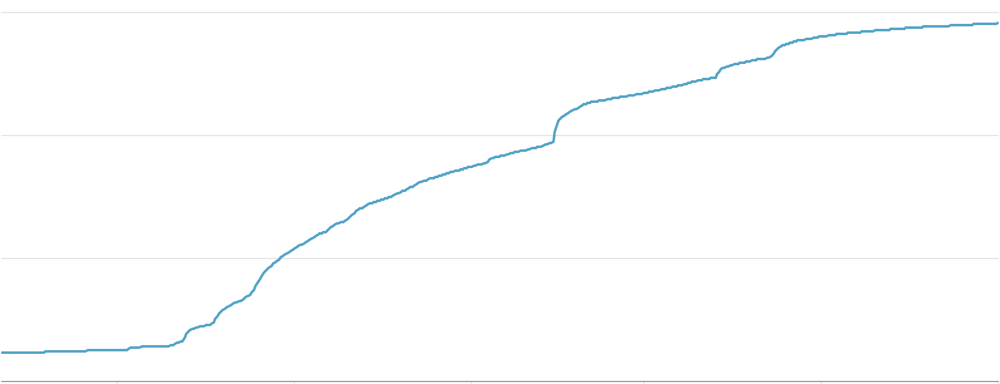
210K140K70K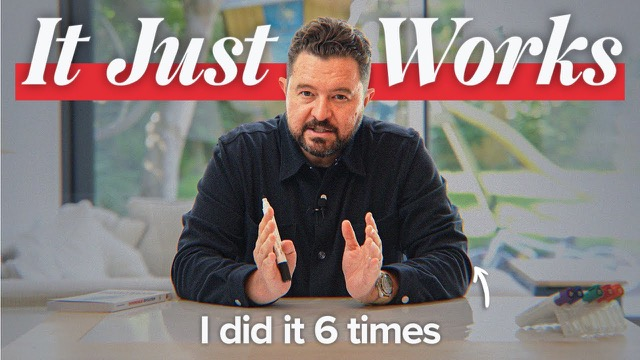
443K views · Sep 25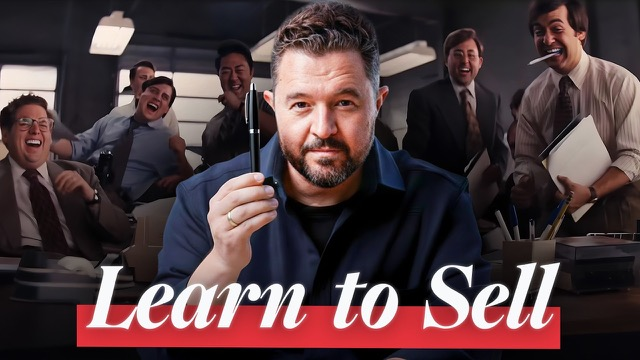
634K views · Dec 25 DOAC collab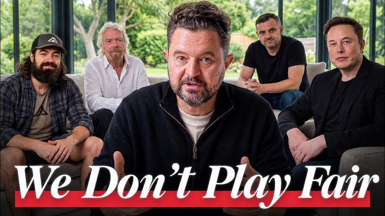
511K views · Jul 26 Relaunch 31 OctRelaunch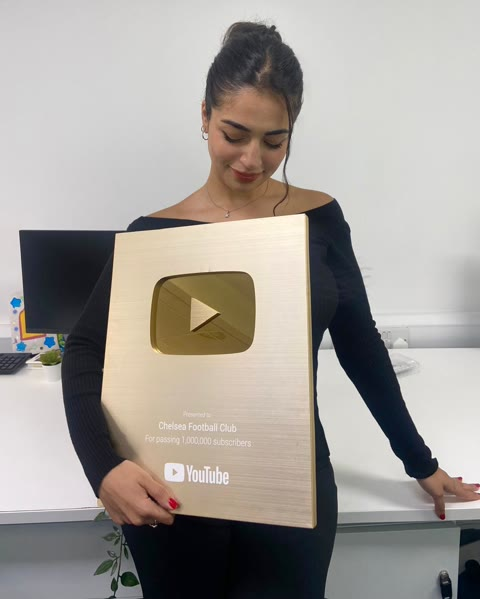
Hey Daniel,
Your best videos are still ahead of you. We want to make even bigger, better content and scale to new heights. To be able to do that, we must treat YouTube as a serious operation, and it requires skillful creatives, strategy and data analysis.
I've gone through all of the research available on YouTube to bring you a comprehensive view of exactly how we'll scale your channel to 500K subscribers.
Najma
Everything on this page sits on top of these.
63% of watch time comes from the home feed and 74% from people who aren't subscribed. Every video is a first impression.
Weekly uploads averaged 6.9M impressions a month. No uploads averaged 1.2M.
Click-through stayed at 4.5 to 6.5% all year while impressions per video ranged from 224K to 9.6M. The idea decides how far it goes.
Viewers come because you've built the businesses. They stay because you make it simple.
Few people in the niche can teach from this much first-hand proof.
Seven companies past $1M, ScoreApp, Dent and five bestselling books.
KPI, the 5 P's, LAPS, SALT. Viewers write them down and repeat them in the comments.
Billionaires, Necker Island, The Diary of a CEO. Dan Martell and Natalie Dawson now copy "Top 0.01%".
The red-bar thumbnail style is distinctive enough that other channels have started copying it.
About 90% of today's subscribers arrived after the launch in September 2025.
YouTube Studio, whole channel, read 28 Oct 2026 (October to the 27th)
Three things happened at once, and each one fed the next.
14 videos in 16 weeks gave YouTube a fresh video for new people almost every week. Impressions climbed: 6.2M, 7.8M, 7.0M.
Every winner spoke to someone who wants a better business or income, not only to buyers of Dent or ScoreApp.
Winners turned 24 to 39 of every 1,000 viewers into subscribers, so each upload started faster than the last.
Same format, same presenter, same production. The difference was how often we published and which ideas we chose.
The promise was always for someone not yet there.
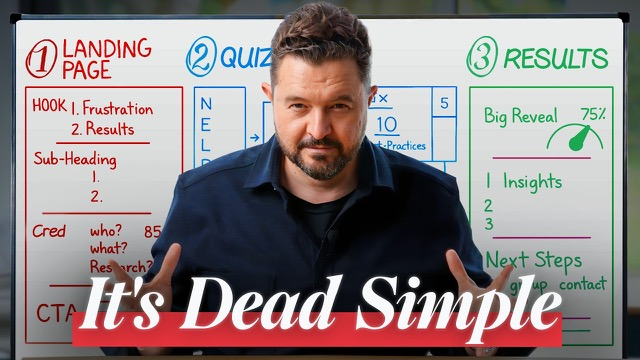
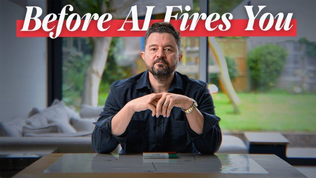
Your audience is people who want to learn how to build a business, not people who already have one. We call this learners vs operators.
You naturally appeal to learners, but commercially your ideal client is an operator. To take the channel to the next level, we double down on the biggest audience, beginners, while keeping you in high esteem with operators.
Students hearing an idea for the first time
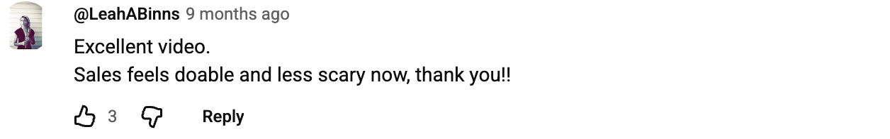
Operators with a specific problem
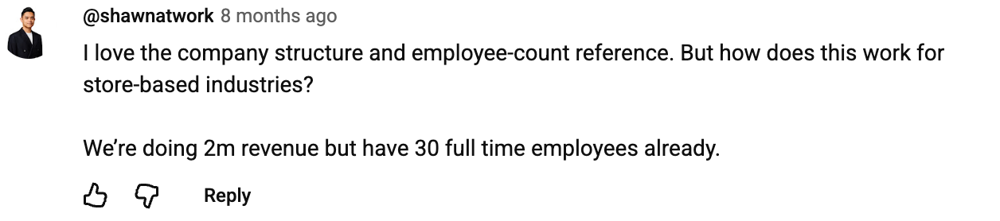
The growth came from people who want to build something, not from people who already have.
Across all 28 long-form videos.
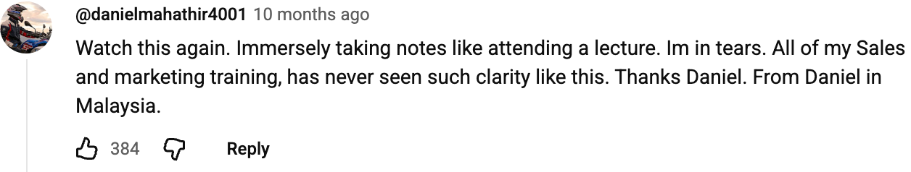
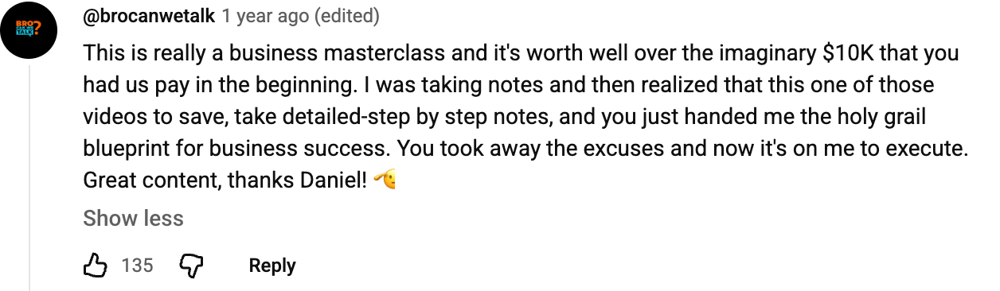
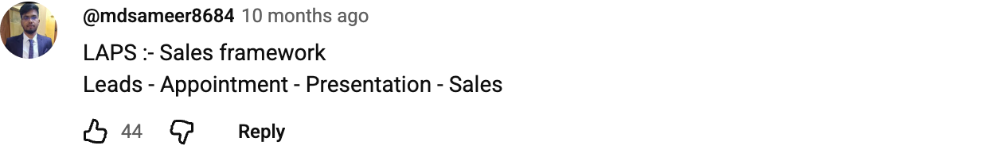
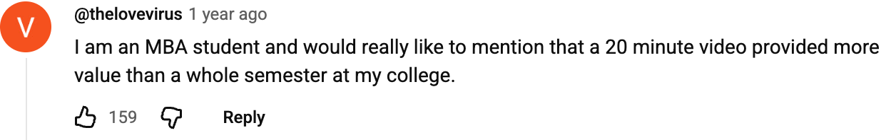
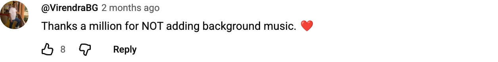
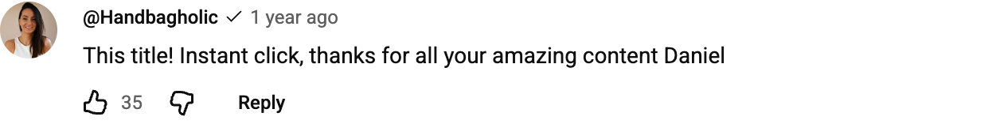
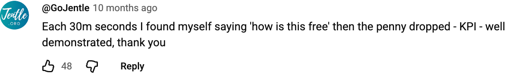
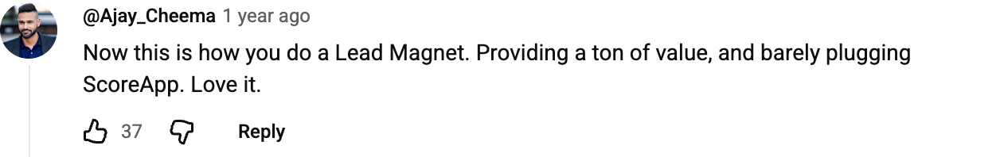
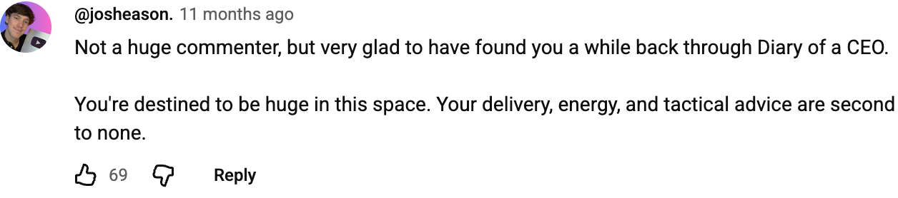
You're seen as a teacher, not an entertainer.
| Sep–Dec 2025 | Jan–Jul 2026 | Aug–Oct 2026 | |
|---|---|---|---|
| Long-form uploads | 14 (~3.5 a month) | 13 (~1.9 a month) | 0 |
| Typical video | 165K views | 48K views | n/a |
| Videos over 250K | 6 | 2 | n/a |
| Impressions a month (whole channel) | 6.9M | 4.5M | 1.2M |
| Watch hours a month (whole channel) | 45K | 32K | 9K |
| New subscribers a month (whole channel) | 22K | 12K | 2.5K |
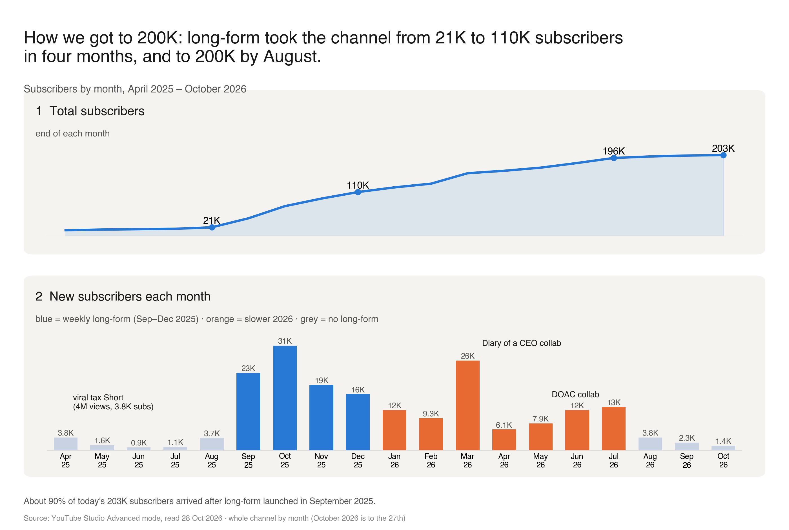
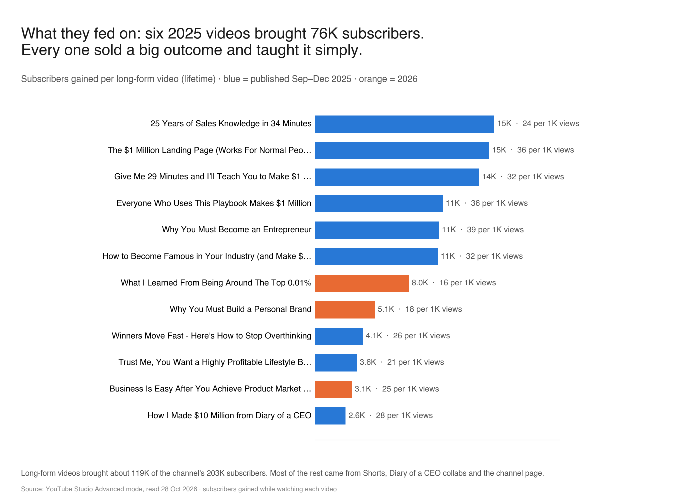
Six videos from the launch run brought 76K subscribers between them, and every one sold a big outcome and taught it simply: three $1M playbooks, the Sales masterclass, Become an Entrepreneur, and Famous in Your Industry. They converted 24 to 39 viewers per 1,000 into subscribers.
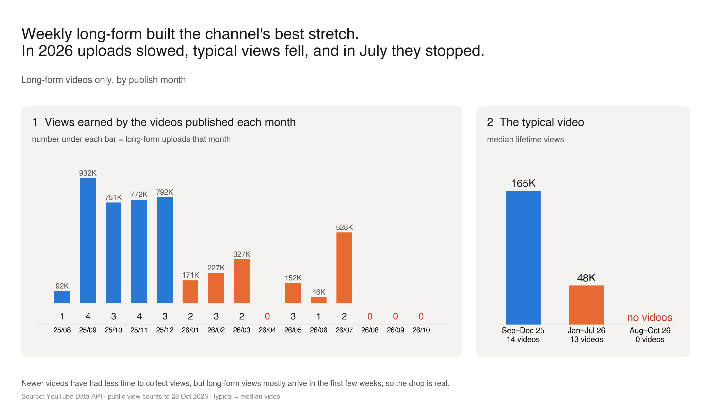
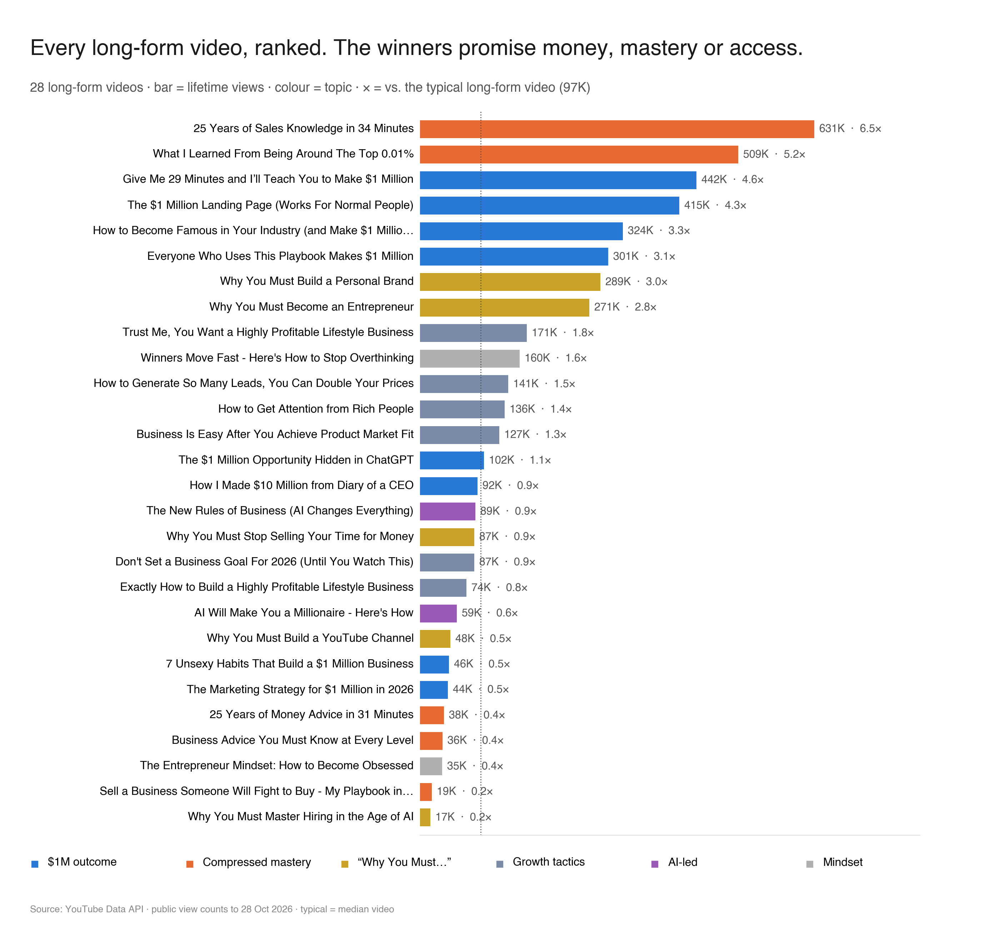
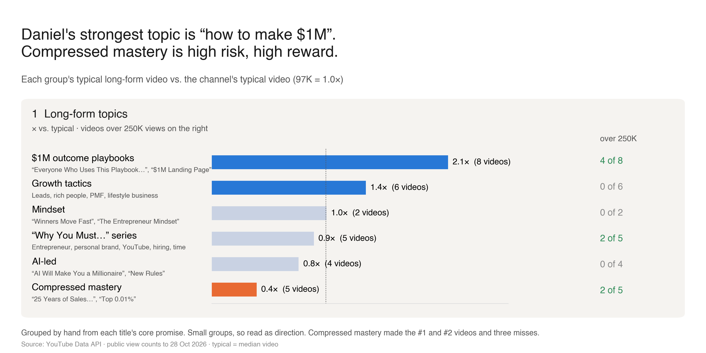
75% of watch time comes from people who aren't subscribed, mostly via the home feed, so YouTube is constantly testing your videos on new viewers. The broader the promise, the more of those new viewers it lands with. Operator topics speak to a smaller, loyal group: good for depth and possibly for leads, which is why it's important to strike a balance.
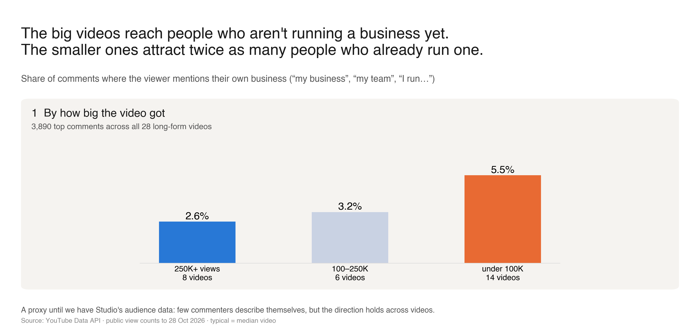
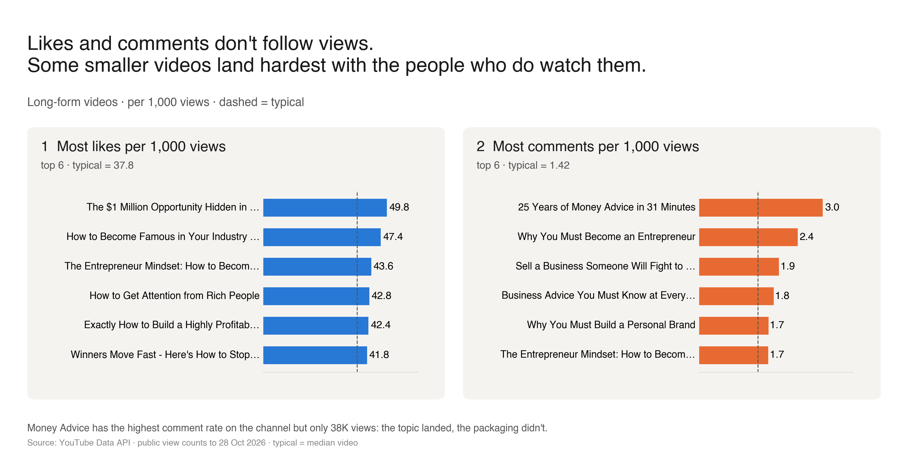
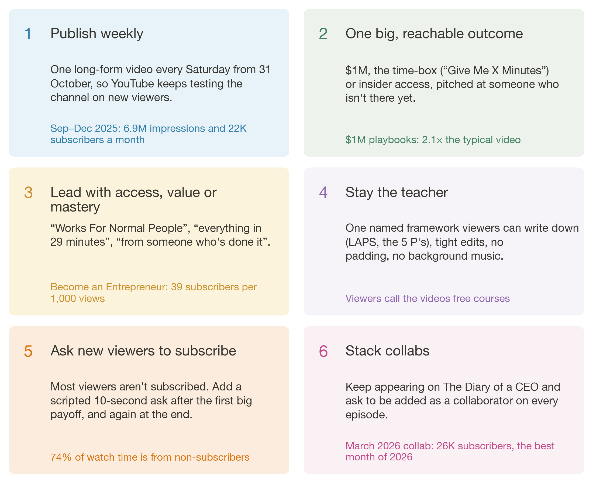
Why: 75% of watch time comes from people who aren't subscribed. A short, natural ask turns more of them into subscribers, which tells YouTube to keep widening each video.
How we'll measure it: subscribers per 1,000 views on every upload in the Monday update, against the 2025 level of 24.
Since the break in July, every monthly number fell in three steps, in step with the uploads.
YouTube Studio, whole channel, read 28 Oct 2026
The audience kept saying yes at the same rate. What fell was how often YouTube asked them. So our goal is more impressions and more watch time.
63% of watch time comes from the home feed and 13% from suggested videos. Search is only 4%. When YouTube recommends less, nothing replaces it.
It matched the upload pattern: weekly, then about two a month, then none. 1.2M a month is the back catalogue on its own.
March (Personal Brand plus a DOAC collab) and July (Top 0.01%) both jumped back above 5M. The demand is still there.
A typical 2026 video was clicked more often than a 2025 one (5.5% vs 5.0%). Across all 28 videos there's no link between click-through and reach. Every video over 250K was shown at least 1.5M times.
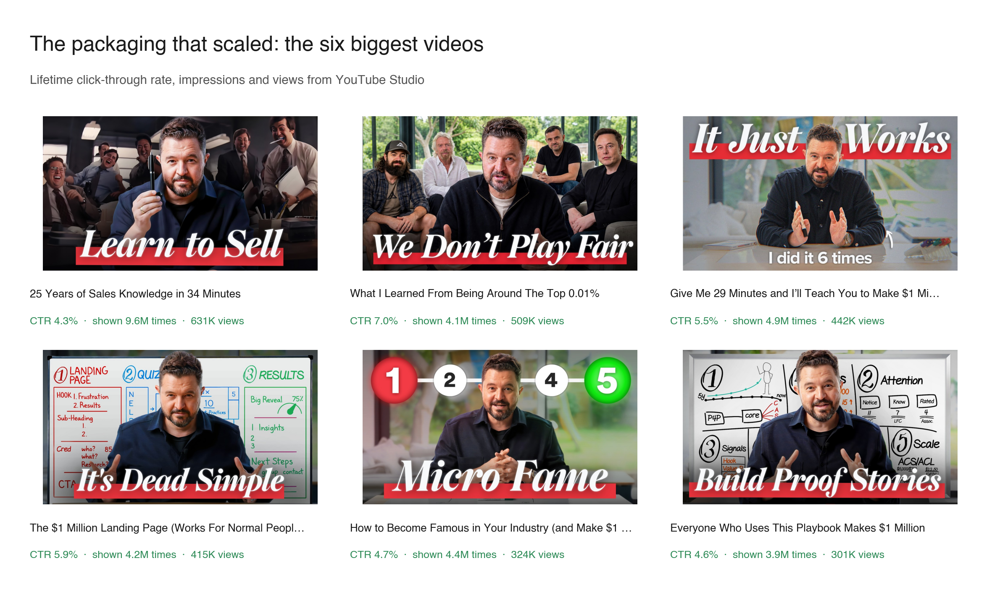
"Learn to Sell", "We Don't Play Fair", "It's Dead Simple". The thumbnail never repeats the title; it adds the emotion.
Looking at camera, mid-explanation, with the red bar across the bottom or top. Consistent and recognisable.
Billionaires around you, a sales floor, a whiteboard framework or a 1-to-5 path. The world the viewer wants to get into.
55 to 70% of viewers are still watching at 30 seconds, and retention held steady all year. The strongest hooks land a number or a contrarian claim in under 3 seconds, then proof, then a short promise.
"What if everything you think it takes to make a million is wrong, and the real answer is boring?
I've built seven companies past a million. Not one came from a hack, a viral moment, or a secret.
Every one came from boring habits I repeated until they worked.
Today I'll give you all seven, the unsexy habits that quietly build real wealth. Get a notepad."
"AI has just put a price on office work, and it's about $80 a month.
Not a year. A month.
Selling your time for money used to be the safest way to live. In 2026, it's the riskiest.
Here's why, and what to do about it."
"Most people think the top 0.01% are smarter, luckier, or simply work harder.
After spending years around people who've built and sold companies worth millions, I expected to find secrets.
Instead, I found patterns that completely changed how I think about wealth and how I live my life.
In this video, I'm going to break these down into 5 patterns…"
"Here's what's coming in hiring, and most founders haven't figured this out yet.
AI is displacing 10 to 20% of workers. Those workers now have AI tools to apply to every open job on the internet. So when you post a role, you're not getting 50 CVs anymore. You're getting 400. Hire for 6 roles? 3,600 applications.
You cannot read that. You cannot interview that…"
Challenge a belief or drop a number immediately. Typical hooks open with context first.
"I've built 7 companies past $1 million." The viewer knows within 10 seconds why to listen to you.
"Get a notepad." The strongest hooks finish in about 60 words. The Hiring hook runs past 100.
Three-quarters of watch time comes from people who aren't subscribed, so new-viewer ideas matter most.
| Now (October 2026) | At the peak (October 2025) | Typical month | |
|---|---|---|---|
| Subscribers | 203K | 75K | n/a |
| Long-form uploads this month | 0 (last one 18 July) | 3 | 2 |
| Impressions | 644K | 7.8M | 5.0M |
| New subscribers | 1.4K | 30.6K | 11.7K |
| Click-through rate | 5.0% | 5.1% | 5.0% |
"Typical month" is the median from September 2025 to October 2026
New videos, on broad ideas, every week. The audience still clicks at the same rate.
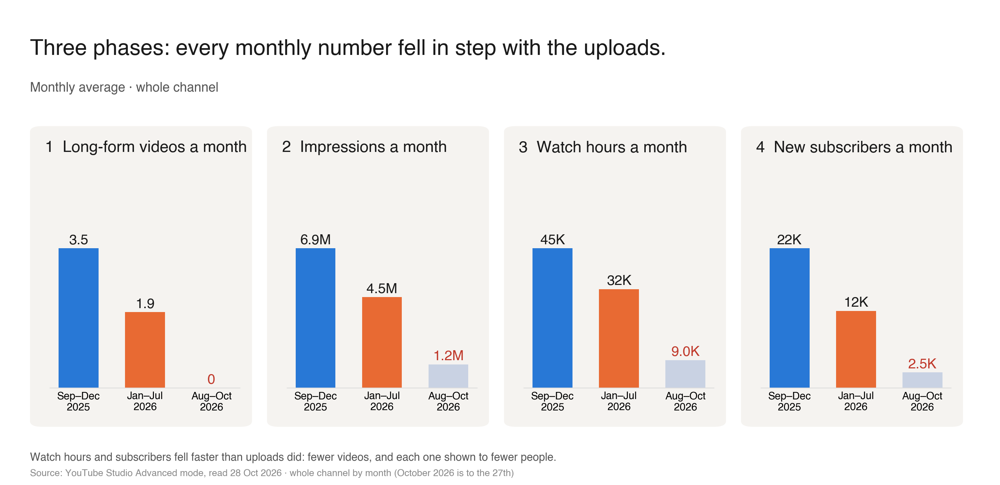
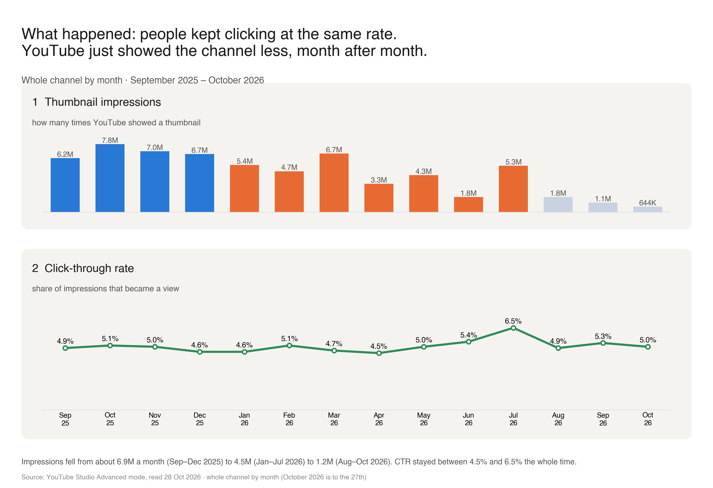
What this tells us: impressions are YouTube deciding how many people to show the channel to. Clicks are the audience deciding whether to watch. The audience kept saying yes at the same rate; what fell was how often YouTube asked them.
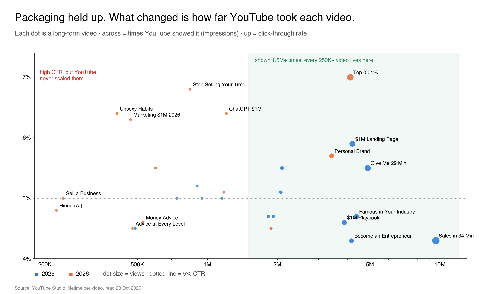
YouTube first shows a new video to a small, warm group (subscribers and recent viewers), who naturally click more. It only widens the audience if the video also keeps people watching and turns viewers into subscribers. The 2026 videos with high click-through (Unsexy Habits, Marketing Strategy, Stop Selling Your Time) did well with that first group, but their topics were narrower and they converted fewer viewers, so YouTube didn't widen them.
| Highest click-through | CTR | Shown | Lowest click-through | CTR | Shown |
|---|---|---|---|---|---|
| What I Learned From Being Around The Top 0.01% | 7.0% | 4.1M | 25 Years of Sales Knowledge in 34 Minutes | 4.3% | 9.6M |
| Why You Must Stop Selling Your Time for Money | 6.8% | 841K | Why You Must Become an Entrepreneur | 4.3% | 4.2M |
| The $1 Million Opportunity Hidden in ChatGPT | 6.4% | 1.2M | The Entrepreneur Mindset | 4.5% | 489K |
| 7 Unsexy Habits That Build a $1 Million Business | 6.4% | 407K | Business Advice You Must Know at Every Level | 4.5% | 476K |
| The Marketing Strategy for $1 Million in 2026 | 6.3% | 467K | Business Is Easy After You Achieve Product Market Fit | 4.5% | 1.9M |
The #1 video on the channel (Sales) has one of the lowest click-through rates. Once YouTube shows a video to millions of colder viewers, click-through naturally drifts down. A lower rate on a huge audience beats a high rate on a small one.
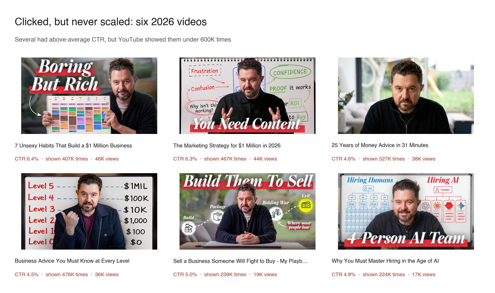
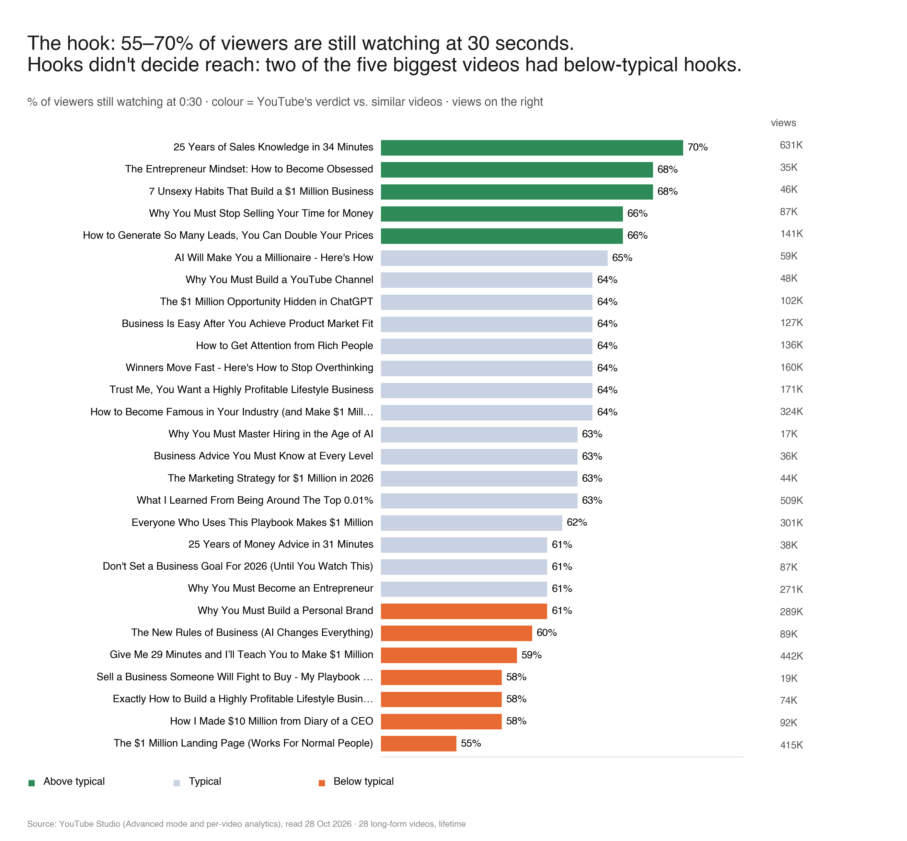
Hooks did not dictate reach: two of the five biggest videos (Give Me 29 Minutes, 59%; Landing Page, 55%) had below-typical hooks. But a stronger hook keeps more of every viewer YouTube sends. Beyond the hook, a typical 2026 video kept people for 5:18 against 5:22 in 2025, and the share watched was the same (31%).
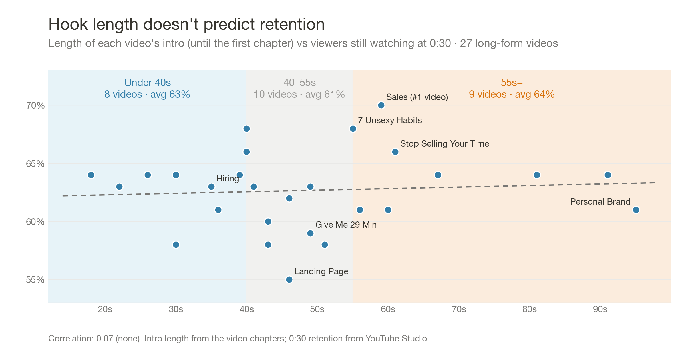
Length on its own makes no difference. Across 27 long-form videos the correlation between intro length and 0:30 retention is 0.07, which means none.
Some long intros held best (Sales, 59 seconds, 70%; 7 Unsexy Habits, 55 seconds, 68%). Some short ones didn't (the Diary of a CEO story, 30 seconds, 58%). A hook can run 60 seconds if every line earns the next one. Cutting a weak hook shorter won't fix it.
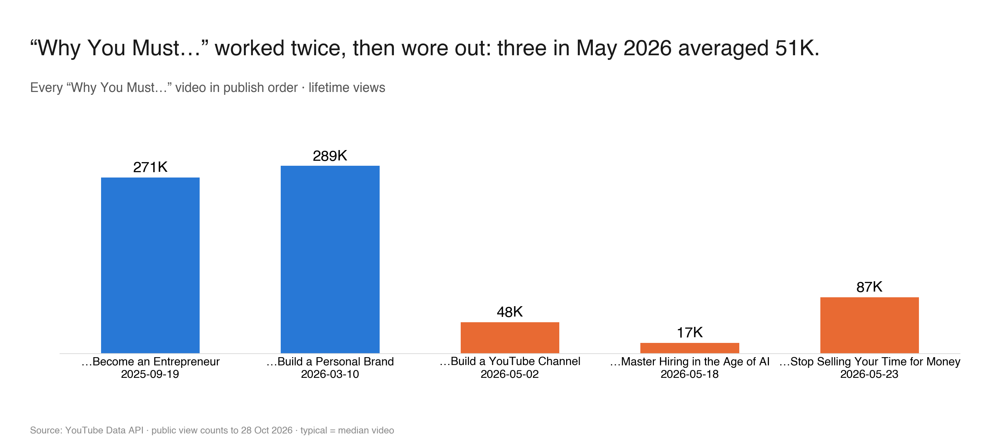
The rule: lead with the outcome you're known for, and bring AI in as the how. For example: "The $1M Business You Can Start This Year (AI Does Half the Work)" rather than "How AI Is Changing Business".
Why: viewers come to you for business-building, not technology. When AI is the subject, you're competing with AI-native channels like Nick Saraev and Liam Ottley, whose tutorials do well (1.5× their typical video). Across the niche, "making money with AI" videos only perform at about their channel's typical level (1.1×).
AI as the angle leads with a big outcome: "The $1M Opportunity Hidden in ChatGPT" (102K, 6.4% CTR, the most-liked video on the channel per view) and "Stop Selling Your Time" (6.8% CTR, 66% at 0:30). AI as the headline underperformed: "AI Will Make You a Millionaire" (59K), "The New Rules of Business (AI Changes Everything)" (89K) and "Why You Must Master Hiring in the Age of AI" (17K). The typical AI-led video got 74K, about 0.8× the channel's typical 97K.
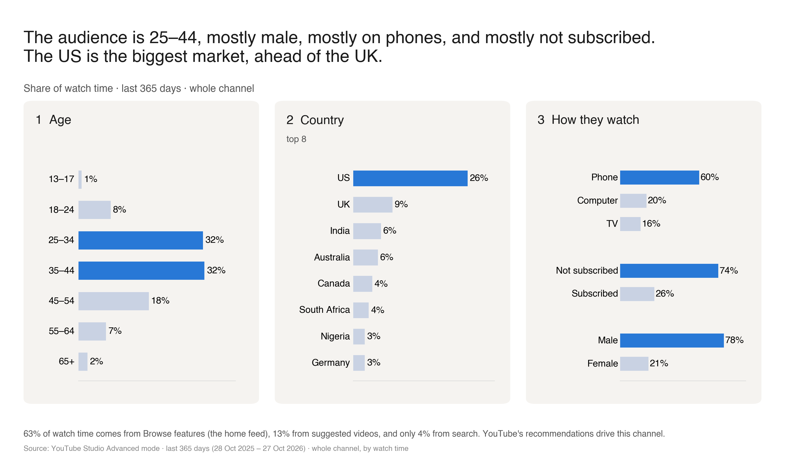
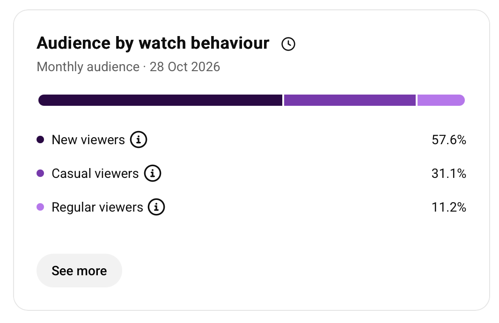
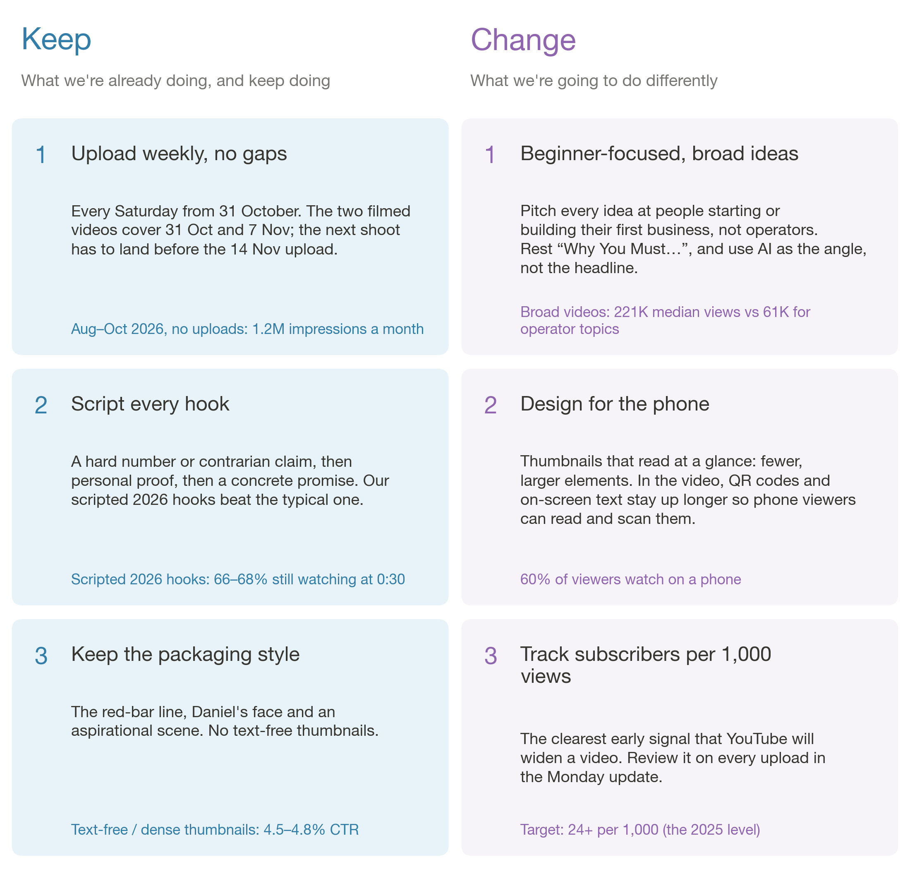
Across 902 videos from 20 entrepreneurship channels, it does 2 to 3× the typical video. Operator topics like scaling and hiring are the weakest, and that's where the recent misses sit.
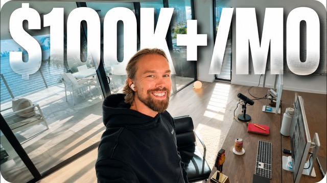
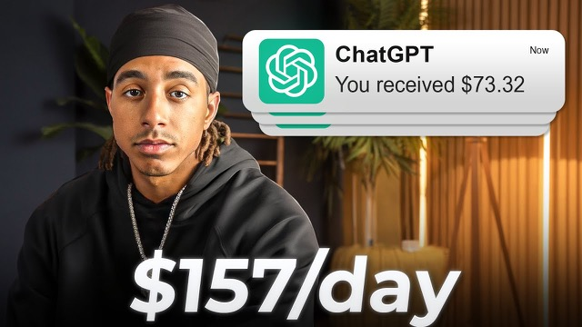
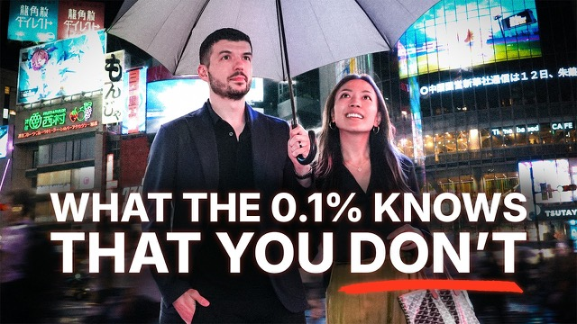
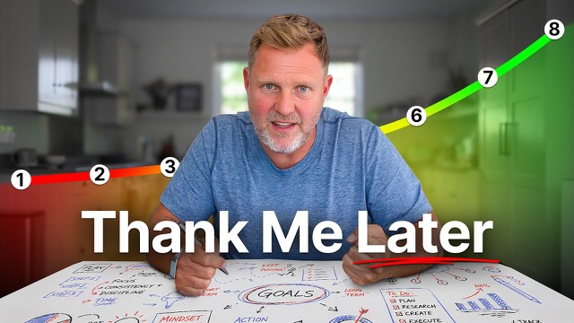
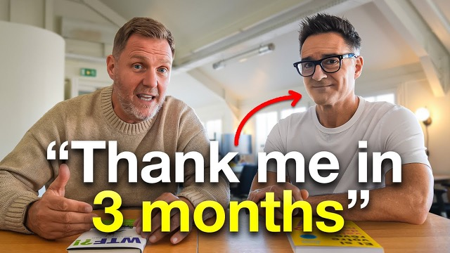
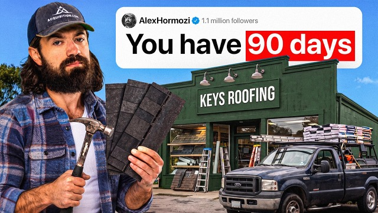
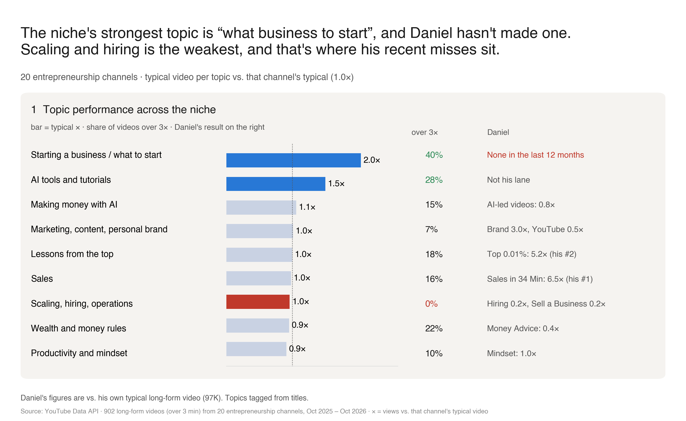
What operator-focused channels get: Taki Moore (28K subscribers), Ryan Deiss (62K) and Ravi Abuvala (109K) teach scaling, funnels and teams. Their typical long-form video in the last 12 months got 9.9K, 5.8K and 2.4K views. Ryan Deiss's "Every Level of Scale Explained in 23 Minutes" got 33K, almost exactly what your "Business Advice You Must Know at Every Level" got (36K). Their biggest videos are the broad ones: Ryan's "I've Coached 1000s of Business Owners. Here's What I Learned" (158K) and Taki's "How I Make $1.6M A Month" (67K).
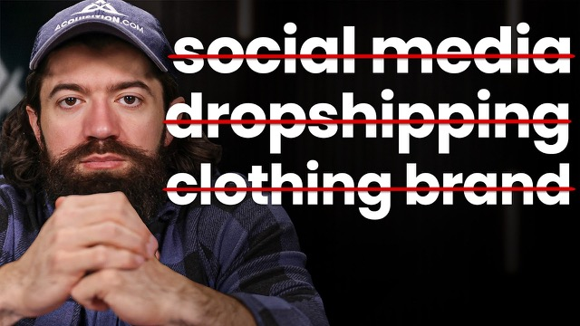
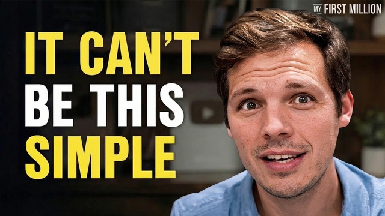
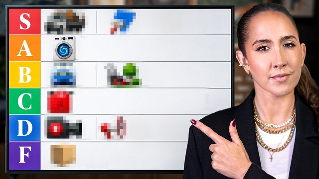
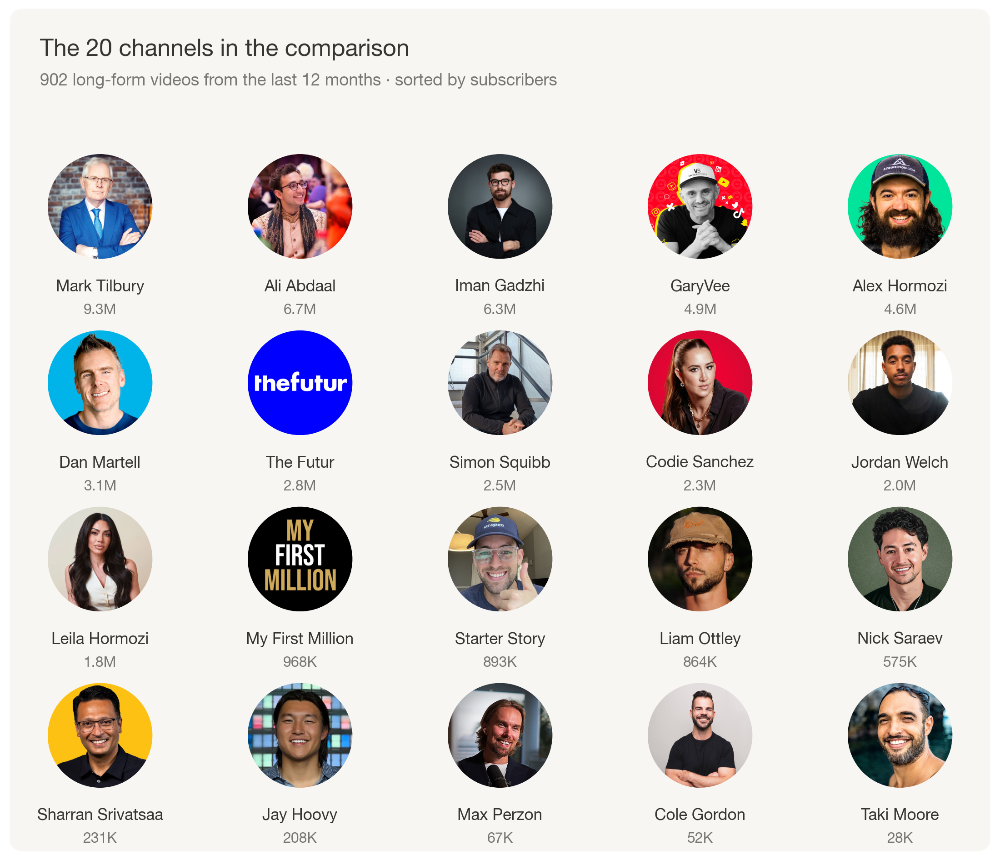
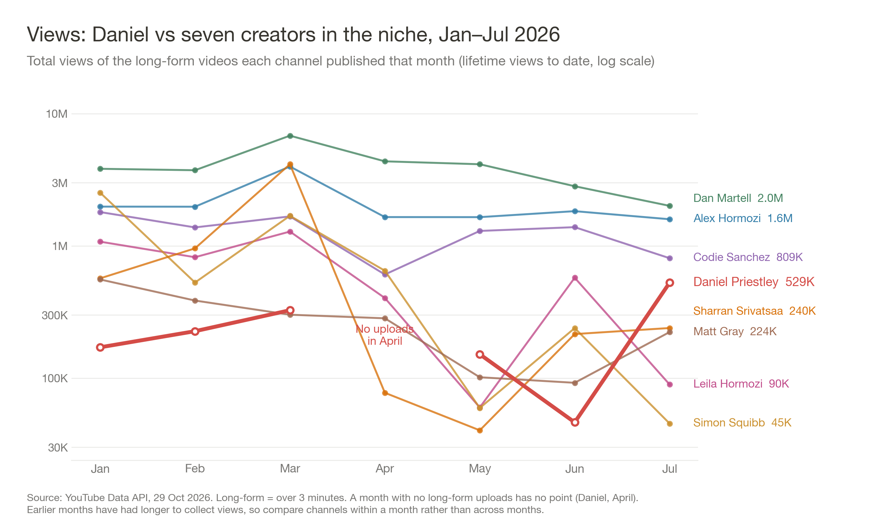
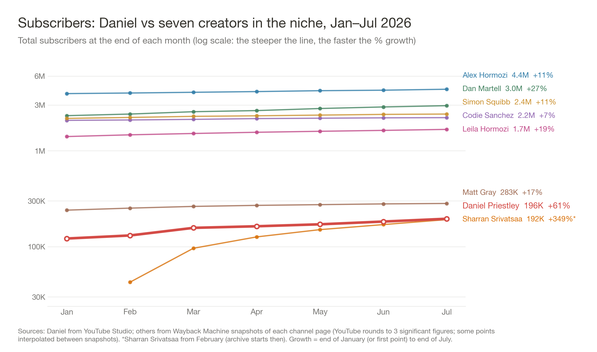
A founder-teacher using your own formats (the time-box, the top 0.001%, "what billionaires know") and getting 3 to 17× his typical video with them. His typical long-form video in the last 12 months got 15K views.
Also from him: "How I'm building a $1b empire in Japan" (158K, 10.3×) and "The only type of business I'd build in 2026" (43K, 2.8×), a "what to start" video.
Similar size, a similar older-mentor style, but leaning into money and wealth. His outliers use the exact formats that work for you.
The strongest titles make the topic feel understandable for a beginner. Money figures are now in a third of all titles in the niche, so on their own they no longer stand out.
| Formula | Proof from YouTube | You |
|---|---|---|
| "Give me X minutes and I'll teach you…" | Iman Gadzhi: Give Me 26 minutes, I'll Give You 10,000 hours of Claude Knowledge (1.8M, 7.4×). Outside business: Obsidian 2.5M, Ryan Holiday 1.8M, chess 1.6M | Your #3 video (442K) |
| "X years of Y in Z minutes" | Chamath: 30 Years of Business Advice in 13 Minutes (from a Billionaire) (861K on a 101K channel). Sharran: 690K. Outside winners mostly promise 13 to 18 minutes | #1 video (Sales, 34 min), but Money Advice (31 min) and Sell a Business (22 min) missed |
| Insider / elite access | Highest hit rate in the niche: 42% of these videos beat 3×. Simon Squibb: I Met 87 Billionaires… Here's 8 Things I Learned (7×) | Your #2 video (Top 0.01%), and widely copied |
| "Once you understand X…" | 2.1× in the niche. Once You Understand Economics, You Can't Be Manipulated Anymore: 3.85M | The 31 Oct relaunch was planned in this format |
| Beginner framing | 1.9× in the niche, 32% beat 3× | Landing Page (Works For Normal People): 415K |
| "If I had to start over" / "If I woke up with $0" | 1.5×. Hormozi 1.4M (8.7×), Simon Squibb 12.5×, Dan Martell's I'm 45. If You're 18 to 30, Watch This… (346K) | Not used yet |
| "Boring" businesses or habits | David Heacock 2.8M, Leila Hormozi's 5 "BORING" Habits 469K, Sharran 151K | 7 Unsexy Habits was the same idea (46K). "Boring" is the word that works |
| Year in the title | 1.7× across 95 videos | Rarely used |
| "Unfortunately, X is really this simple" | One real outlier: Josh K. Fay, Unfortunately, Becoming a Millionaire Really Is This Simple (156K on a 34K channel). Nearly every other example is under 15K views on small channels | The 7 Nov video uses it. The "$1M Business" half does the work, so A/B test an alternative title |
| Question titles | 0.75×, the weakest formula in the niche | Weak for you too |
About 78% of your subscribers joined after September 2025, so most of today's audience has never seen them.
This channel works best as the place people go for you: the one they trust, subscribe to and come back to every week. Right now the Key Person of Influence channel (71K subscribers) looks very similar: the same red bar, the same italic white font, your face in the same framing, the same whiteboards, and some of the same thumbnail text ("It's Dead Simple" is on both). Some of its titles use our formats too, such as "Why You Must Run These 3 Marketing Campaigns".
In the niche, 21 to 30 minutes does best and under 10 does worst. Your longest videos are your biggest. Go to 30 to 45 minutes only when the subject earns it.
Longer videos earn more minutes from every viewer: 3:54 watched at under 15 minutes, 6:44 at over 25.
| Length | View range | Median | Average | Typical runtime | Avg view duration | Avg % viewed |
|---|---|---|---|---|---|---|
| Under 15 min | 35K–415K | 131K | 157K | 10:22 | 3:54 | 38% |
| 15–20 min | 17K–324K | 89K | 123K | 18:00 | 5:18 | 31% |
| 20–25 min | 19K–509K | 95K | 177K | 21:53 | 5:59 | 27% |
| Over 25 min | 38K–631K | 442K | 371K | 31:45 | 6:44 | 22% |
Consistency decides how often YouTube tests the channel on new viewers. Broad ideas decide how far each test goes.
3 to 4 videos a month brought about 22K subscribers a month. None brought about 2.5K. Uploads and impressions move together even more closely (correlation 0.84).
16 broad videos: 221K median views, 24 subs per 1,000, 107K subscribers. 10 narrow ones: 61K, 14 per 1,000, 13K subscribers.
Two months with three uploads each: October 2025 (the $1M Playbook, the Landing Page, Entrepreneur Mindset) brought 31K subscribers. February 2026 (the ChatGPT opportunity, Advice at Every Level, The New Rules of Business) brought 9K. So every upload must be broad and finished to the winners' standard, and we keep a bank of 3 to 4 finished videos so a weak one never fills a slot.
The typical channel in this space published about 200 long-form videos over about 28 months before passing 500K. Weekly from 31 October takes you to about 80 by October 2027.
Actual subscribers to October 2026, then three paths from the relaunch.
Estimates. "Well" follows the milestones in our targets; "okay" is weekly uploads at about 17K a month; "nothing" continues the Aug to Oct 2026 trend.
Keep the three that got us to 200K. Add three more for 200K to 500K.
The single biggest driver. Relaunched on 31 October, every Saturday, no gaps.
$1M, the time-box and insider access, pitched at someone who isn't there yet, with one framework on the whiteboard.
Ask to be added as a collaborator on every episode you appear in.
Pitch every idea at people starting or building their first business. Lead with "what to start in 2027".
When a video breaks out, publish the follow-up within 2 to 3 weeks while YouTube is still testing the idea.
The clearest early sign YouTube will widen a video. Report it every Monday, aim for 24+, and drop topics that keep converting under 15.
To reach 500K, the channel has to look and feel like a 500K channel. Two benchmarks.
median views, about one long-form video a week
median views, about two long-form videos a week
Above LAPS, KPI, the 5 P's and Oversubscribed, repeated in the description, intros and end screens.
A fixed set, colours and typeface, with the framework on the board in the thumbnail.
"X Years of Y in Z Minutes" and "Give Me X Minutes" as recognisable series.
Only finished, broad teaching here. Weekly and reliable beats more: Codie gets about 19× Matt's median at half the volume.
The Diary of a CEO collab gave you the best month of 2026. These five pull big audiences right now and fit your world.
UK, Ogilvy, behavioural marketing. The "irrational" side of business your audience loves.
Modern Wisdom, 4.5M subscribers. A huge audience of 25 to 44 self-improvers.
The Psychology of Money. Money made simple, the same promise as your money pillar.
Ex-Google X. The biggest voice on what AI means for work.
UK, all about starting a business. Exactly the beginner audience we want.
Film every collab as a long-form video on your channel and add the guest as a YouTube collaborator so it shows on both. Package it like any other video: the big outcome in the title, the guest's face next to yours in the red-bar style.
| Who | Proof on YouTube (last 12 months) |
|---|---|
| Rory Sutherland | Guest median 241K · Alchemy talk: 897K · LBC: 827K |
| Chris Williamson | Guest median 1.4M · Diary of a CEO: 3.1M · Joe Rogan: 1.7M. Also: you on Modern Wisdom |
| Morgan Housel | Guest median 396K · BigDeal: 824K · Chris Williamson: 732K |
| Mo Gawdat | Guest median 746K · Diary of a CEO: 6.4M · Silicon Valley Girl: 1.5M |
| Simon Squibb | Own channel 2.5M · School of Hard Knocks: 402K |
We're aiming to reach 500K in well under half the videos most channels needed. That's possible because you start at 203K with a proven format, but only if every week ships, and every video is broad and finished to the winners' standard.
The $1M playbooks: one outcome, one framework, taught simply.
The niche's strongest topic, and new for you.
Insider access only you have: billionaires, Necker Island, Diary of a CEO.
The time-boxed masterclass: "Give Me X Minutes", "25 Years in 34 Minutes".
Every one is built on a format that has already worked, pitched at someone not yet running a big business, with a 2 to 4 word thumbnail line.
Titles are drafts to test, not final packaging. We'll merge these with your ideas document and score each one before it goes into the rollout.
The relaunch is live. The next video is in the edit, and the ten after it are planned.
3 variants per video, A/B tested from the moment it goes live.
Each end screen and pinned comment points to the previous video, so new viewers keep watching.
A ScoreApp assessment or lead magnet in every description, matched to the topic.
Performance in Slack every Monday. We swap titles or thumbnails on any slow video, as we did with Top 0.01%.
Shoot 2 needs to happen 3 to 6 November for week 3 to go out on 14 November. If it slips, we post Shorts that week and move the schedule back a week.
Each shoot needs to land at least 10 days before its first upload.
The channel slowed every time the footage ran out. A monthly shoot keeps the weekly rhythm going.
The biggest accelerators so far: Diary of a CEO collabs (about 10K subscribers each) and outliers (one 300K+ video is worth a month of normal growth).
10 weekly uploads from 31 October
Weekly uploads, one outlier a month, a Diary of a CEO collab
About 25K a month: weekly rhythm plus at least one Top 0.01%-style hit per quarter